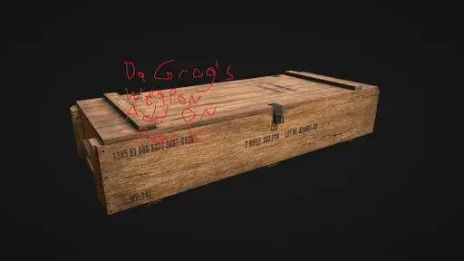

DaGrogs Weapon AddOn Pack
- Downloads
- 6,153
- Favourites
- 12
- Mod lists
- 21
Da Grog’s Weapon add on pack. A bunch of cloned weapons with caliber conversions and extended customization. No new models but I highly recommend using Tyfon’s Weapon Customizer as with all my mods due to some small groggistuff with the extended customization.
Install by unzipping the downloaded file directly into your main SPT directory, the path will be SPT > user > mods > DaGrogsAddOnWeaponPack
Un install by going into the game, load the profile, delete all weapons you have in inventory from the mod, and then delete the mod folder DaGrogsAddOnWeaponPack
===============================================================
Ill try to add more stuff as time goes on, but I dont got much time. There may be some jank but it worked as I tested this on a good fresh install and my main install with like most of the 4.0 SPT mods.
In the README.Md on github and the download, youll find a text file with some code for SVM’s Trader Assort window. Copy paste it in so the lines are following SVM’s FAQ on item additions to the assort in Greed.exe to have the items added to the traders in game - otherwise the items are found in flea without the assort. Again, the SVM Greed.exe has a FAQ in it on how to format but I tried to make it Copy Paste. Stack lines ON TOP not side by side, no spaces. Change the prices or levels in the assort as you like but, have fun figuring out the item ids- maybe look in the code? idk an easy fix to help you guys on this, maybe will try to add a page with the ids.
=================================================================
Not a coder, tried my best but my standards are most likely far below yours. This means, issues? Your guess is as good as mine, I will try to fix but no promises. Use at your own risk, but it worked for me.
=================================================================
Guns Added So Far:
- (Modified) Auto Deagle .50Ae Pistol
- SR-50 .50Ae Auto Marksmen Rifle
- MP-50 .50BMG Nitro Double Barrel
- AA20 20g Auto Shotgun
- Saiga20 20g Semi Shotgun
- 9x18mm AS Val
- 9x19mm M60
- 46x30mm OPSKS
- 9x21mm PKP
- 762TT RPDN
- 20 Gauge RSh20
- 762x39mm AK15
- .300Blk Vss Vintorez
- A special hammer :)
- TOZ-545 5.45x39mm Bolt Action Survival Rifle
- 9x39 AKMSN
- .45 ACP RPK-45
- .357 Kel-Tec CFB
- Bear Acquisitioned 7.62x39 M4
- MP-338 Pump Action .338LM Rifle
- KS40 40MM/Vog-25 Pump Grenade Launcher
- Mosin Avtomat Machine Rifle (With the right mods you can make an off brand Hunt Avtomat)
- M23 Grenade revolver shotgun in 23x75mm
- VPO-217 7.62x39mm Bolt Action Rifle
- VPO-102 7.62x25mm TT Select fire carbine
- Nastya’s Axe (Buffed Axe)
- Impact Zarya (Look away quick)
- Ariella’s Persuasion (Buffed Knife)
- GP23/UBS23 Under barrel shotguns in 23x75mm (and can use MP-APERS) for AK/ARs respectively (The AR UBS requires a 14.5 or 13.7 inch vanilla barrel because BSG coded the slots for launchers there… it makes no sense)
Version
1.0.6
New Weapons Added:
- M23 6 Shot 23x75mm Revolver Shotgun (high recoil and spread)
- VPO-217 7.62x39mm Bolt Action Rifle
- VPO-102 7.62x25mm TT Select Fire Carbine (pistol slot compatible)
- Nastya’s Axe
- Impact Zarya
- Ariella’s Persuasion (A knife)
- GP-23/UBS23 23x75mm underbarrel shotguns for AK/AR platforms respectively (can use MP-APERS as well), relatively high spread
SVM Trader Assort text if you want these weapons added to trader assorts:
Skier:RUB:45000:6a2ca07ae59f8047a621d974:2 Skier:RUB:5000:6a2ca3e5e59f8047a621d975:2 Prapor:RUB:10000:6a2d71432d88bb525fd8e3ed:1 Prapor:RUB:1800:6a2d73162d88bb525fd8e3ee:1 Prapor:RUB:2000:5de655be4a9f347bc92edb88:1 Prapor:RUB:5000:5de65547883dde217541644b:1 Prapor:RUB:1000:5de6558e9f98ac2bc65950fc:1 Prapor:RUB:7500:6a2d82da2d88bb525fd8e3ef:1 Prapor:RUB:1500:6a2d88e32d88bb525fd8e3f0:1 Prapor:RUB:1000:5c5039be2e221602b177c9ff:1 Prapor:RUB:1000:5c503d0a2e221602b542b7ef:1 Prapor:RUB:2000:5c503af12e221602b177ca02:1 Skier:RUB:50000:6a2d8e7f2d88bb525fd8e3f1:2 Mechanic:RUB:2500:6a2edd5db916df1e107c9549:1 Peacekeeper:RUB:50000:6a2ee6c1b916df1e107c954a:2 Prapor:RUB:30000:6a2eeb78b916df1e107c954b:2 Peacekeeper:RUB:25000:6a2ef0b9b916df1e107c954c:2
Version
1.0.5
Delete Old Mod and then install this mod
Adds:
- Bear Acquisitioned 7.62x39 M4 and supporting mods
- Pump Action MP-338 Rifle and supporting mods
- Ks40 Pump Grenade Launcher and supporting mods (40mm and Vog-25)
- Mosin Avtomat and supporting mods (Use weapon Customizer + WTT Armory to make a temu brand Hunt Avtomat)
SVM Trader Assort Text:
Prapor:RUB:25000:68ffe715f5d3ce799350d74c:2 Prapor:RUB:10000:68ffec40f5d3ce799350d74d:2 Prapor:RUB:12500:5df917564a9f347bc92edca3:2 Prapor:RUB:5000:698fce89403a9a71db04ed95:2 Prapor:RUB:11000:698fd0b3403a9a71db04ed96:2 Prapor:RUB:30000:6990a217bc87b5009f1b5277:2 Prapor:RUB:10000:6990e147bc87b5009f1b5279:2 Prapor:RUB:10000:6990e18bbc87b5009f1b527a:2 Prapor:RUB:4000:6990e562bc87b5009f1b527c:2 Mechanic:RUB:75000:69920ef71fed54ed6b90f4e3:2 Mechanic:RUB:5000:699212351fed54ed6b90f4e4:2 Mechanic:RUB:10000:5e848d99865c0f329958c83b:2 Mechanic:RUB:5000:5e848d51e4dbc5266a4ec63b:2 Mechanic:RUB:5000:5e848d1c264f7c180b5e35a9:2 Mechanic:RUB:30000:69f7a79246aada2998e29b28:2 Mechanic:RUB:3000:69f7abc646aada2998e29b29:2 Mechanic:RUB:3000:69f7aec746aada2998e29b2b:2
Version
1.0.4
- Nerfed the TOZ545 Accuracy a bit (too accurate for a back up sniper) but improved ergo (its light and small, easy to move and hold)
- Added 9x39 AKMSN (Affordable, Simple, Customizable BUT slow firing, heavy, clunky to hold)
- Added .45 ACP RPK-45 (.45 ACP LMG with extended customization I will probably add to the normal RPK-16 in my remix mod)
- Added .357 Kel-Tec CFB (A RFB with select fire chambered in .357 Magnum)
If you want the added items available to buy in base Traders, use the assort text below in SVM per the SVM FAQ:
- Mechanic:RUB:27500:698bc1d10ada973cf48327a3:1
- Mechanic:RUB:3000:698bdd940ada973cf48327a9:1
- Mechanic:RUB:6000:698e6b8be5b41e09df651228:1
- Mechanic:RUB:1000:59ff3b6a86f77477562ff5ed:1
- Mechanic:RUB:250:59e8a00d86f7742ad93b569c:1
- Skier:RUB:15500:698bca730ada973cf48327a4:2
- Skier:RUB:2500:698bd0fd0ada973cf48327a8:2
- Skier:RUB:5500:698bce9a0ada973cf48327a6:2
- Skier:RUB:5500:698d36901405162f7a0faef9:2
- Skier:RUB:9500:698bcf6b0ada973cf48327a7:2
- Skier:RUB:1000:5beec3e30db8340019619424:2
- Skier:RUB:17500:698d25601405162f7a0faef7:1
- Skier:RUB:4000:698d28541405162f7a0faef8:1
- Skier:RUB:3000:5f2aa47a200e2c0ee46efa71:1
- Skier:RUB:10350:5f2aa46b878ef416f538b567:1
- Skier:RUB:15000:5f2aa47a200e2c0ee46efa71:1
- Skier:RUB:1000:5f2aa49f9b44de6b1b4e68d4:1
- Skier:RUB:4200:5f2aa493cd375f14e15eea72:1
Version
1.0.3
- Fixed AA20 not appearing on Flea Market, now it does!
- Fixed M60 9mm conversion not working (error on my part porting it over)
- Added TOZ-545 Bolt Action Survival Rifle (A reliable back up 4 shot bolt action sniper that fits in the pistol slot using 5.45x39mm! Aim for the head for best results…)
- Prapor:RUB:6500:698a707869d65f535346e7a7:1
- Prapor:RUB:1000:698a748269d65f535346e7a8:1
Assort to add to SVM for TOZ545 rifle and mag above^
Version
1.0.2
- Fixed 4.6 OPSKS mag handbook placement
- Added 9x18mm AS VAL to holster slot, honestly felt appropriate given the weak ammo
- Added RSh 20 20 gauge Revolver shotgun pistol (a pistol slot shotgun!)
- Added AK 15, A 762x39 converted AK12 AR (has extended stock customization but handguards were too bad to be added from vanilla pool… some other mods have stuff for the AK12 which bolt right on though.)
- Added Vss300, A Vss Vintorez in .300 blk (Multiple silencer options available)
- Added Tomilas Trusted Comrade, a Tagilla hammer buffed for the player to use… a reference to one of my earliest SPT profile characters
New Item Assorts for SVM if you want them on traders, otherwise use flea market:
- Skier:RUB:17500:6987e488d48b4b1e24a3a0dc:1
- Skier:RUB:3000:69881c70d48b4b1e24a3a0dd:1
- Skier:RUB:500:633ec8e4025b096d320a3b1e:1
- Prapor:RUB:75000:69883728d48b4b1e24a3a0de:3
- Peacekeeper:RUB:47500:6988eb63a6cdcf1b07062938:2
- Peacekeeper:RUB:5000:6988f0fea6cdcf1b07062939:2
- Prapor:RUB:125000:698901b7a6cdcf1b0706293a:3
Version
1.0.1
Your honor i claim whoopsy daisy i uploaded a wrong version my bad (I fixed the lack of proper mags, guns should work well now)
Version
1.0.0
Initial release, has: -Auto Deagle .50Ae -SR50 Auto .50Ae AR -MP-50 BMG Nitro Double Barrel -AA20 20g Auto Shotgun -Saiga20 20g Semi Shotgun -9x18mm AS VAL conversion -9x19mm M60 conversion -4.6x30mm OPSKS auto conversion -9x21mm PKP conversion -762TT RPDN conversion + Associated parts